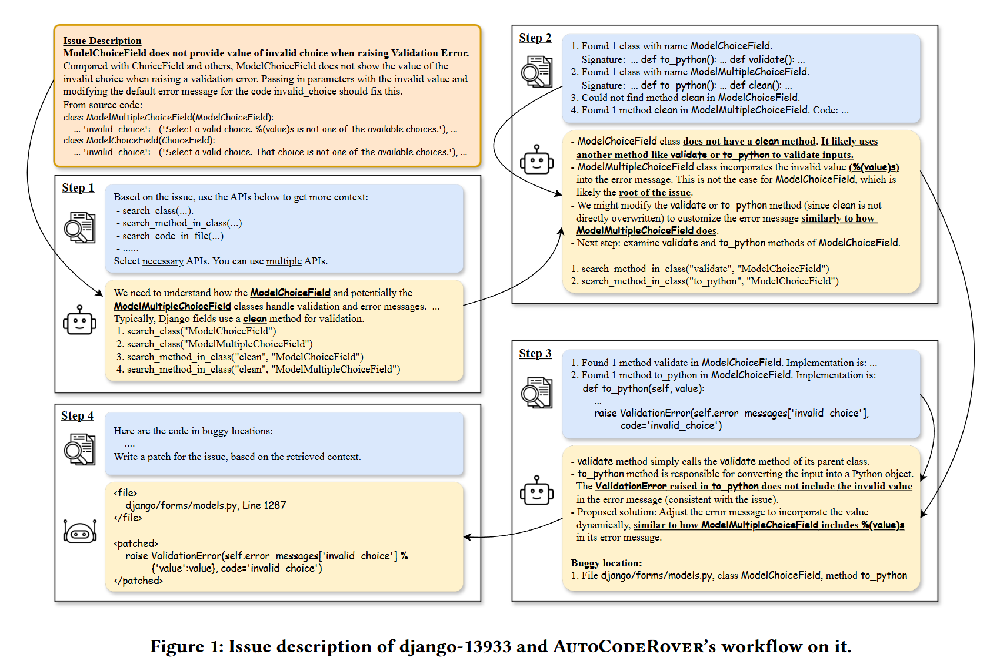
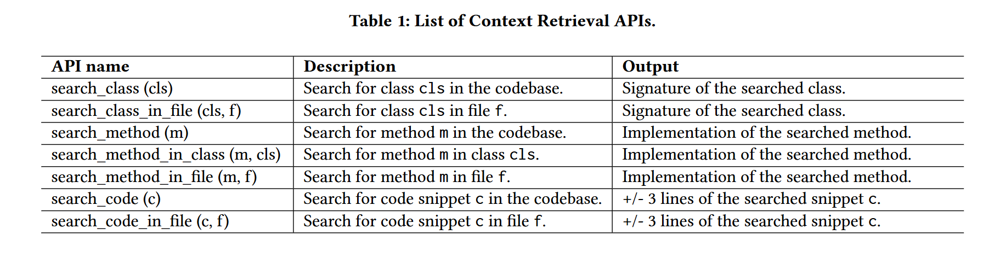
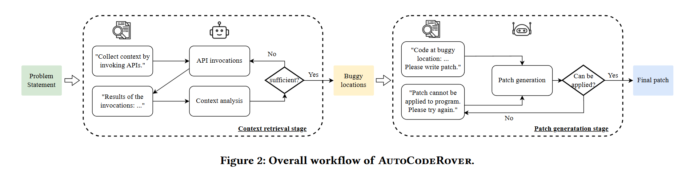
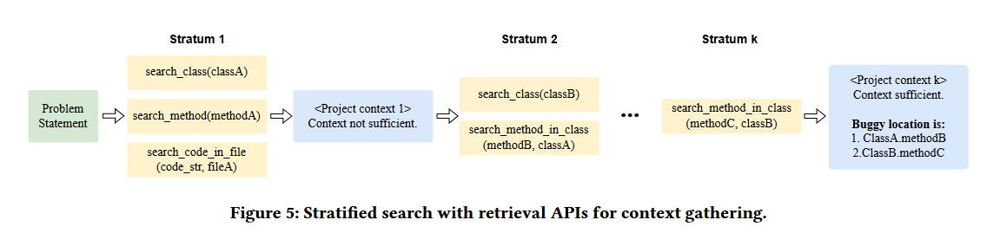
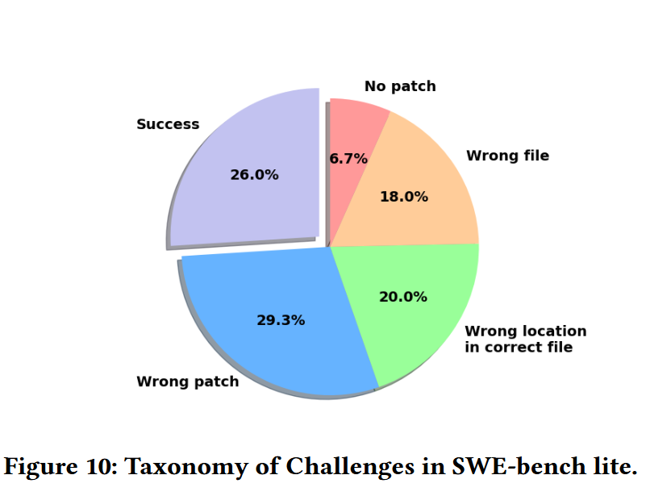
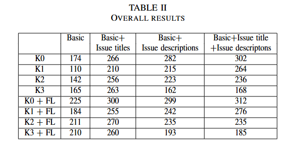

读paper17-基于LLM的缺陷修复4与修复提示词
读paper17-基于LLM的缺陷修复4与修复提示词
https://dl.acm.org/doi/10.1145/3650212.3680328
https://dl.acm.org/doi/10.1145/3650212.3680384
https://ieeexplore.ieee.org/document/10664337
CREF: An LLM-Based Conversational Software Repair Framework for Programming Tutors
https://dl.acm.org/doi/10.1145/3650212.3680328
为避免LLM爬取导致的数据泄露，引入了TutorCode数据集，https://tutorcode.org/docs/ ，信息挺充足的。
是一种动态修复工具，方法很简单，就是反复将测试用例通过情况加上人类思考交给LLM直到修复通过。所以其中还是需要人为的干涉，所以实际上跟日常生活中问LLM没区别。
可以考虑使用一个LLM把其中的人类思考替代掉，类似于DeepSeek R1的思考过程。
AutoCodeRover: Autonomous Program Improvement，一种解决 Github issue的自动化方法
https://dl.acm.org/doi/10.1145/3650212.3680384
https://github.com/AutoCodeRoverSG/auto-code-rover
数据集
https://arxiv.org/abs/2310.06770
该研究使用SWE-bench数据集，该数据集是针对测试LLM解决Github仓库issue能力而建立的。
一个样例
该问题要求为 ModelChoiceField 类添加支持，以便 “在出现验证错误时显示无效选择的值”。
与
ChoiceField以及其他方法相比，ModelChoiceField在引发验证错误时不显示无效选择的值。在参数中传递无效值，并修改invalid_choice代码的默认错误信息，应该可以解决这个问题来自源代码：
2
3
4
5
6
7
8
9
10
11
"""A MultipleChoiceField whose choices are a model QuerySet."""
widget = SelectMultiple
hidden_widget = MultipleHiddenInput
default_error_messages = {
'invalid_list': _('Enter a list of values.'),
'invalid_choice': _('Select a valid choice. %(value)s is not one of the'
' available choices.'),
'invalid_pk_value': _('“%(pk)s” is not a valid value.')
}
...
2
3
4
5
6
7
8
9
"""A ChoiceField whose choices are a model QuerySet."""
# This class is a subclass of ChoiceField for purity, but it doesn't
# actually use any of ChoiceField's implementation.
default_error_messages = {
'invalid_choice': _('Select a valid choice. That choice is not one of'
' the available choices.'),
}
...

主要分为两个阶段，上下文检索和补丁生成。
首先，上下文检索 LLM Agent受命从 Django 项目代码库的本地副本中收集与此问题相关的代码上下文。这种检索是通过在项目的抽象语法树（AST）中查找相关名称（如 ModelChoiceField）来实现的。Agent根据问题描述识别出可能与之相关的类 ModelChoiceField 和 ModelMultipleChoiceField，并推断出对于与验证相关的问题，clean方法也可能与之相关。然后，它调用 search_class 和 search_method_in_class API 来获取更多相关信息。这里API名字也比较顾名思义。

在Step 2 中，API 调用会返回类的签名和找到的方法的实现。第 3 个调用的结果显示，ModelChoiceField 类中没有方法 clean，这有助于增强Agent对Step 1 的理解。第三个调用中重新显示的类签名还揭示了问题描述中未提及的两个重要方法 to_python 和 validate。这表明检索应该分多个步骤迭代进行，这样前一次搜索的结果就可以成为后一次搜索的参数。在这个例子中，Agent会对新发现的两个方法反复调用 search_method_in_class。此外，通过引用多次调用的结果，Agent可以推断出 ModelMultipleChoiceField 将无效值纳入了带有 %(value)s 的信息中，并且 ModelChoiceField 中的方法可以进行类似于 ModelMultipleChoiceField 的修改。
第 3 步，Agent获取到 validate 和 to_python 方法的实现。在这两种方法中，Agent认为 to_python 更适合进行修改，因为 to_python 会引发相关异常，而且不包含无效值。此时，检索的Agent认为所收集的代码上下文对于理解问题和创建代码补丁足够了。已确定的错误位置，连同已收集到的上下文和分析结果，将传递给另一个补丁生成Agent。该Agent受命按照图 2 的Step 4（见黄框）中描述的格式编写补丁。
在Step 4 中，利用 Python 中的 % 格式编写了一个补丁，以便将一个值整合到错误信息中。
整体步骤

两个阶段，上下文检索和补丁生成，图画的比较明白，都是循环的过程，直至判断其结果是可用的。
上下文检索
我们的第一点看法是，上下文检索不应局限于单次API调用
第二个观察结果是，一些API的调用结果为进行新的可能的API调用提供了更多元素，这意味着调用检索API的过程应该是迭代的
基于这两点，我们提出了一种分层搜索流程，用于调用上下文检索 API，如图 5 所示。根据问题陈述，分层搜索会反复调用检索 API 来收集项目代码上下文，并最终输出待修复的潜在错误位置列表。在每个层中，我们都会提示 LLM 代理根据当前上下文选择一组必要的 API 调用。在分层 1 中，当前上下文只包含问题陈述；在接下来的分层中，上下文既包含问题陈述，也包含迄今为止搜索到的代码。通过允许 LLM 选择多个 API 调用，并指示它只选择必要的 API 调用，我们充分利用了上下文，构建了我们认为的最佳上下文。在一个层中的 API 调用执行完毕后，新检索到的代码片段会被添加到当前上下文中。然后，LLM 代理会被提示分析当前上下文是否足以理解问题，从而决定 我们是否继续迭代搜索过程，或我们是否决定将考虑修复的错误位置。

结果分析与思考
上下文检索和补丁生成两个阶段都有改进的空间，需要提升上下文检索定位的准确率，同时优化补丁生成的正确性，上下文检索定位相对比较好改进，比如使用CFG等替代AST，但是补丁生成就需要更加详细的Agent配置，一方面是对于基座LLM的微调，另一方面是对整体流程的优化，比如补丁正确性的判断策略。
Evaluating the repair ability of LLM under different prompt settings
https://ieeexplore.ieee.org/document/10664337
错误描述对于大语言模型修复错误至关重要。
错误位置在大多数情况下能够提高大语言模型的修复能力，但并不总是有效。
few-shot learning 并不有助于提升大语言模型对有缺陷程序的理解

K0-K3代表 k-shot prompting 中的k的数量，FL代表 fault location
这里其实有非常重要的一点，一般认为给LLM提供修复样例能够提升修复成功率，但因为提供的样例不一定完全是有效信息（会引入额外噪声），所以这其实对提供的样例与待修复代码的相似性提出了很高要求（来保证样例的指导效果大于噪声的干扰）